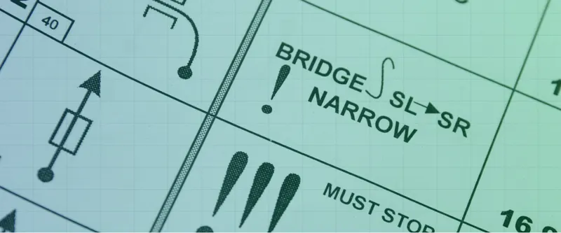

Ράλλυ Ακρόπολις 2025 Preview - Οι Ειδικές του Αγώνα
To Ράλλυ Ακρόπολις είναι το τελευταίο σε σειρά από τρία σκληρά χωμάτινα ράλλυ. Είναι η πρώτη φορά που ο εθνικός μας αγώνας διεξάγεται το καλοκαίρι από τότε που επέστρεψε στο καλεντάρι του WRC το 2021. 'Iσως στην τελευταία έκδοση του ράλλυ με…

Ράλλυ Ακρόπολις 2024 - Ανάλυση των Ειδικών
Το 68ο Ράλλυ Ακρόπολις είναι προ των πυλών, και η διαδρομή του είναι διαφορετική σε σχέση με τα προηγούμενα έτη.

Ώρα για επιστροφή της Qualifying Stage?
O Thierry Neuville δεν ήταν φαν του Ράλλυ της Λετονίας, και επανέφερε το debate για την επιστροφή της Κατατακτήριας ειδικής στο προσκήνιο.

Ανάλυση της διαδρομής του Ράλλυ Φθιώτιδος
Η Ελληνική άσφαλτος επιστρέφει στη διεθνή σκηνή με το Ράλλυ Φθιώτιδος στις 28 με 30 Ιουνίου. Ο αγώνας με κέντρο την Λαμία θα είναι ο 4ος γύρος του πρωταθλήματος Tour European Rally, και έχει 2 παλιές και 2 καινούριες ειδικές διαδρομές!

Ανάλυση της διαδρομής του φετινού Ράλλυ Ακρόπολις
Το ωράριο του φετινού Ακρόπολις ανακοινώθηκε, και υπάρχουν κάποιες εκπλήξεις! 2 καινούριες ειδικές, επιστροφή σε Θήβα, και απουσία από Ιτέα!

Η διαδρομή του 70ου ΕΚΟ Ράλλυ Ακρόπολις
Το ωράριο του 70ου ΕΚΟ Ράλλυ Ακρόπολις δημοσιεύθηκε σήμερα από τους διοργανωτές του εθνικού μας αγώνα και αποτελείται από 17 ειδικές διαδρομές, συμπεριλαμβανομένου μιας υπερειδικής διαδρομής στην Αθήνα. Δεδομένου ότι ο αγώνας για φέτος έχει κέντρο…

Ράλλυ Ακρόπολις 2026: Ανάλυση των Ειδικών Διαδρομών του Αγώνα
Το Ράλλυ Ακρόπολις επιστρέφει στην Πελοπόννησο για την 70ή του έκδοση, με το κέντρο του αγώνα να βρίσκεται στο Λουτράκι. Το μεγαλύτερο μέρος της διαδρομής του αγώνα είναι καινούριο, με μόλις μία ειδική διαδρομή να παραμένει αμετάβλητη σε σύγκριση με…